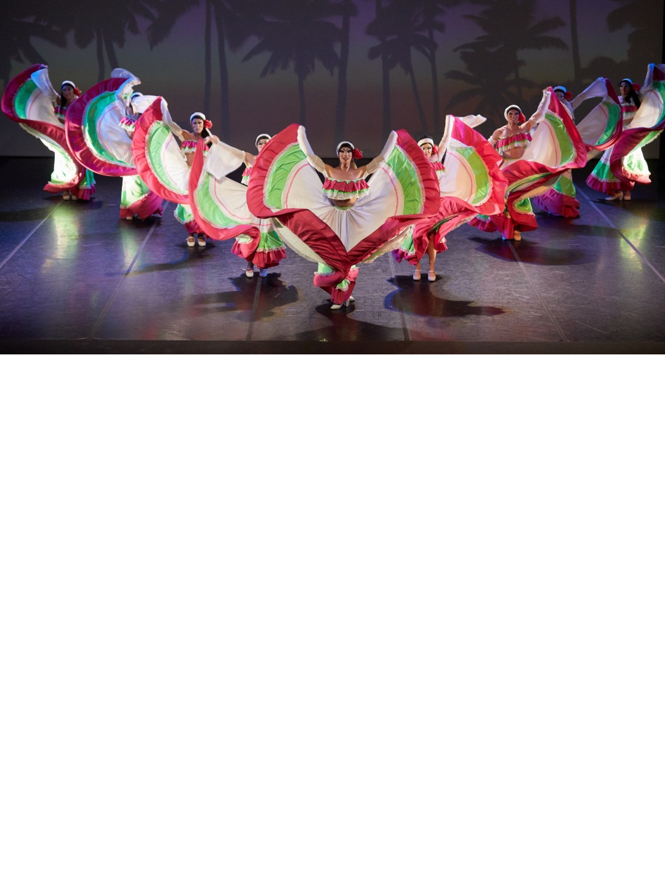
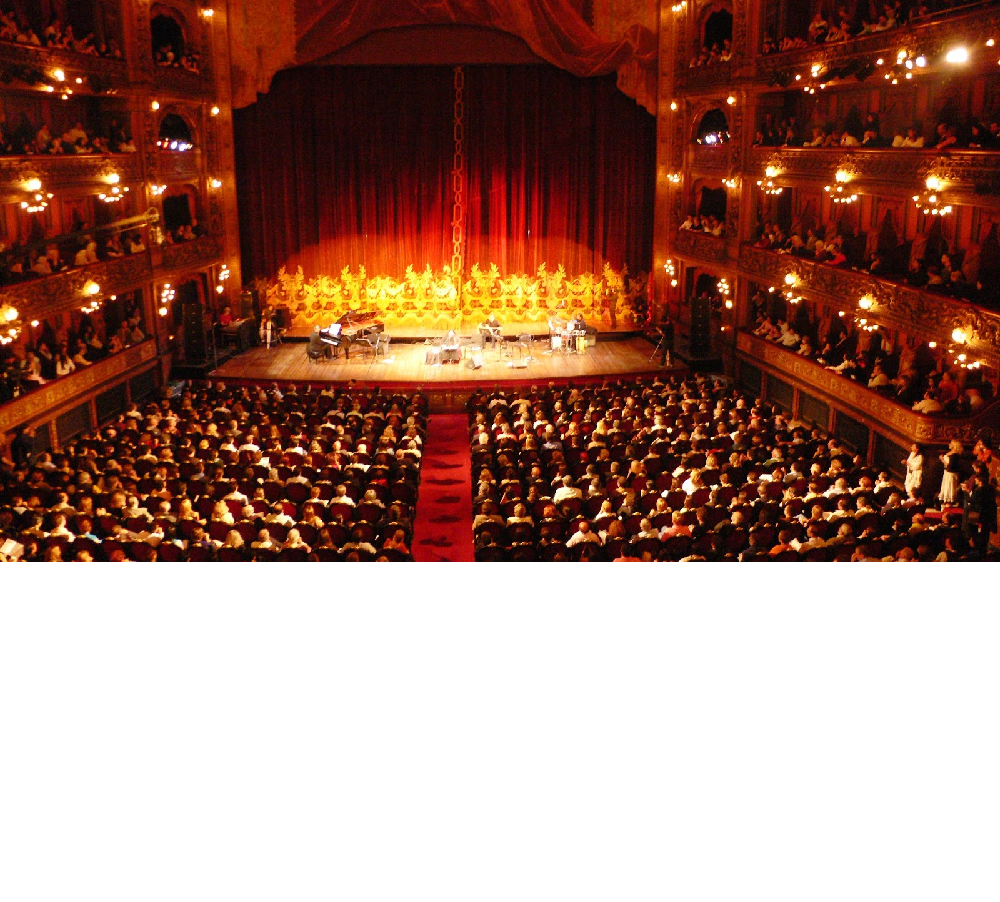
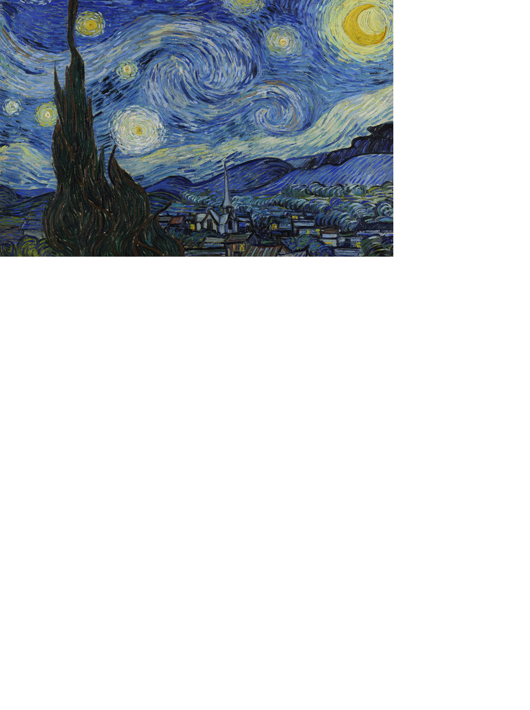

Danza
La danza es una forma de arte que permite expresar emociones a través del movimiento corporal. Existen muchos estilos, como el ballet, la danza contemporánea, el hip-hop y la danza folklórica.
- Ballet
- Danza folklórica
- Hip-Hop
Más información en Wikipedia.
Teatro
El teatro combina actuación, escenografía y narrativa para representar historias frente a un público. Es una de las formas más antiguas de arte escénico.
- Tragedia
- Comedia
- Drama
Consulta más en Wikipedia.
Pintura
La pintura es una manifestación artística que utiliza pigmentos para crear obras visuales. Permite representar la realidad o la imaginación del artista.
- Óleo
- Acuarela
- Acrílico
Más sobre la pintura en Wikipedia.